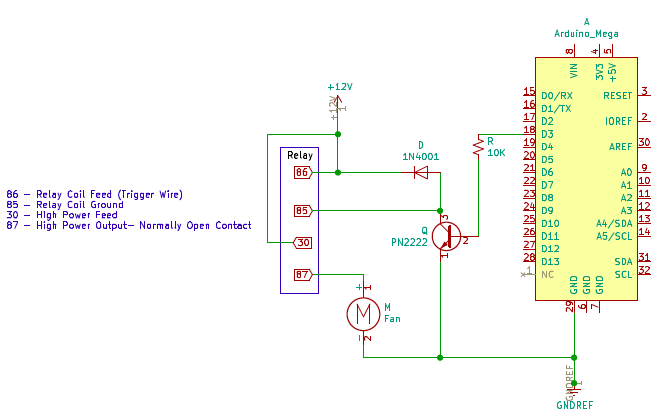
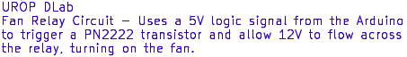
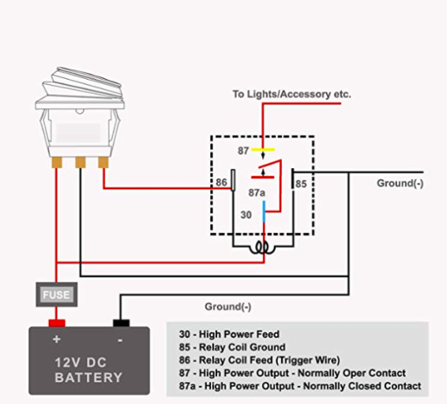
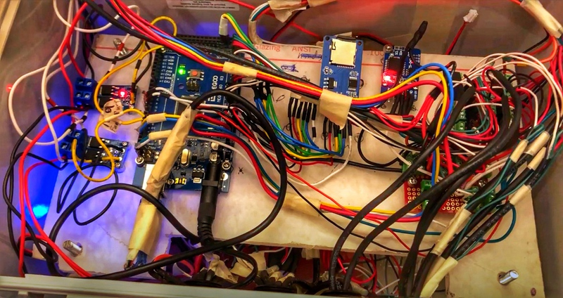
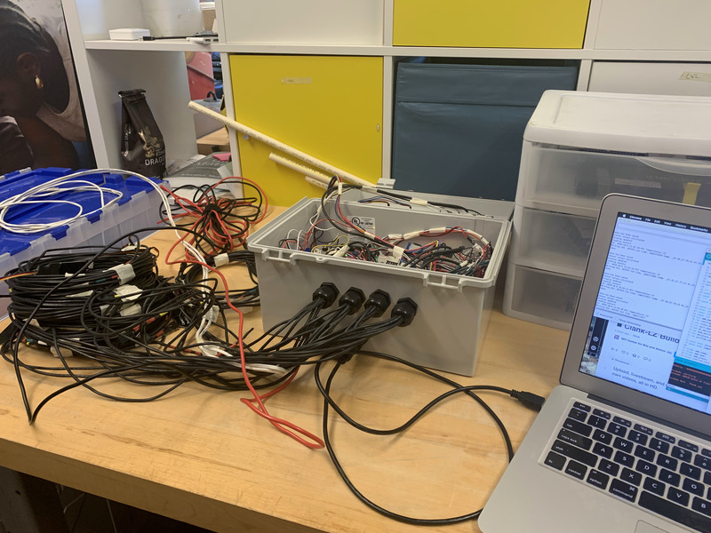
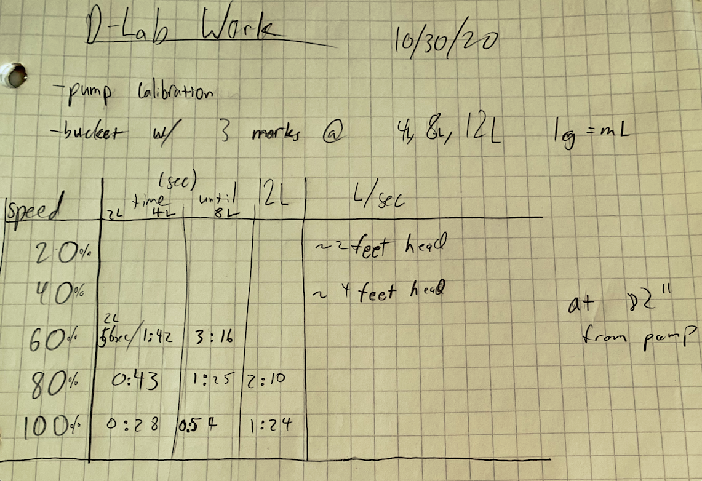

The youtube video below, submitted in the J-WAFS video competition, does a good job of explaining the research in general.
One of the initial schematics using the car relay to switch the fan and water pump on/off

We were using this relay with this schematic
We are using the DS3231 RTC CLock to maintain an accurate Time Stamp.
Here is some example code to program/interface with the real time clock. Ignore the 32K and SQW lines, connect SDA and SCL lines to the Arduino, VCC to 5V and GND to GND.
We are using the BME280 Temperature/Humidity/Pressure Sensor We communicate with this sensor using I2C Protocol
Here is an overview of some of the electronics that are contained within the evaporative cooler.
Went in to lab to try to work on the sd transfer process! Still some bugs, not sure why the SD transfer works seamlessly on my end, but doesn't at all with the lab setup.
We went ahead and did a quantitative calibration for the water pump to see what voltages we needed to apply to get the output of water we desired.
At 20% and 40% power the water was not even able to go up the 82 inches to exit the tube.
&"; if ($_SERVER['REQUEST_METHOD'] == "GET) { $storeVal1 = $_GET["a1"]; //Now you have the values of val1, val2, val3 stored in storeVal1, storeVal2, storeVal3 respectively. } print "; ?>